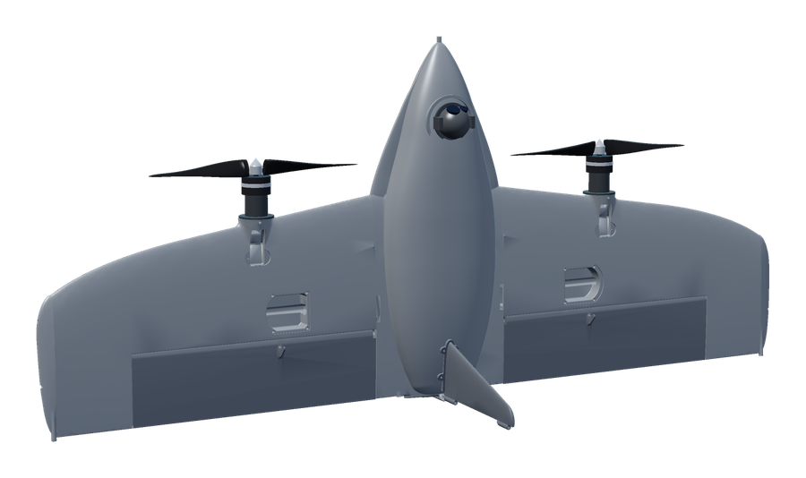
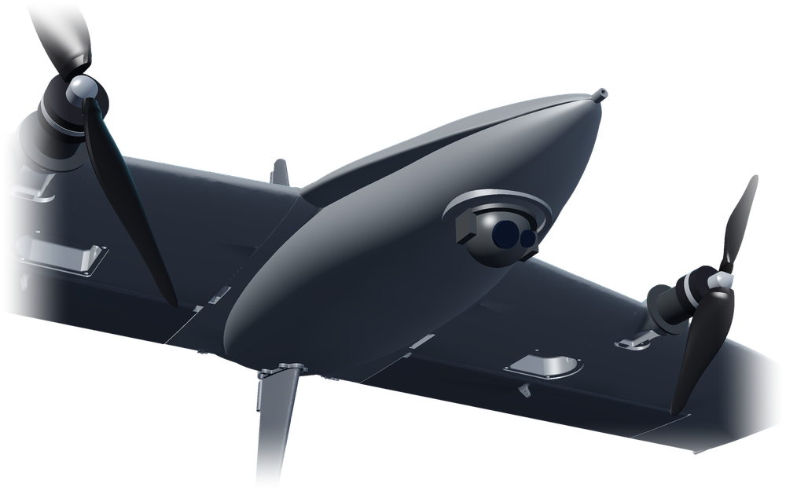

Unibody composite shell
Wing, body and tail formed as one structure — fewer joints, less to fail and less to inspect between sorties.
01 — The aircraft
Small UAS usually forces a choice: multirotors launch anywhere and run out of endurance; fixed wings do the opposite and need a runway to prove it. Ravin is designed to sit on its tail, lift off vertically, then pitch over and fly as a wing — the trade-off, gone. It is in development and has not flown yet.

Design targets — not yet flight-tested
Wing, body and tail formed as one structure — fewer joints, less to fail and less to inspect between sorties.
The same units lift the aircraft vertically and drive it forward once it is wing-borne.
A defined volume in the centre body with its own access panel — swap the payload without touching flight structure.
Lit for orientation in low light, and doubling as the aircraft's landing contact point.

Launch poseBoth propellers point straight up for a vertical take-off. The fin tips and the wing are what it is designed to stand on.

PayloadAn EO/IR gimbal ball sits in a 58 mm aperture under the nose, looking forward and down, clear of both propellers.
Design renders of the current V1.30 airframe. Ravin has not flown yet.
In development
CG animation of the V1.30 design: vertical take-off on its tail, transition, wing-borne cruise and landing back on its tail. Ravin has not flown yet.
Concept of operations
No runway, catapult or launch rail. The aircraft is designed to stand on its tail and climb vertically from the spot it was set down.
It is designed to transition to horizontal flight for the mission, trading rotor lift for wing efficiency and the endurance that comes with it.
It is designed to return to the vertical and settle onto its wingtip skids. No net, no belly landing, no recovery crew.